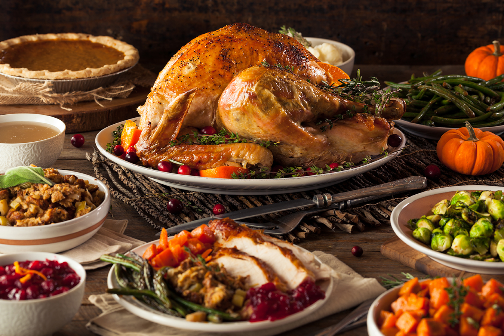

Roasted Holiday Turkey

Description:
A roasted holiday turkey is a quintessential centerpiece of festive celebrations, particularly during Thanksgiving and Christmas. It features a whole turkey, expertly seasoned with a combination of herbs and spices, typically roasted until the skin turns a golden brown and the meat becomes tender and flavorful. Often accompanied by stuffing, gravy, and an array of side dishes, a roasted holiday turkey symbolizes warmth and tradition, bringing family and friends together around a bountiful, savory feast that captures the essence of the holiday season.
Ingredients:
- Whole Turkey
- Herbs and Spices
- Butter or Oil
- Aromatics
- Stock or Broth
- Optional Stuffing
- Vegetables
- Gravy Ingredients
Steps:
- Prepare the Turkey - Thaw the turkey if it's frozen. This may take several days in the refrigerator, depending on the size of the turkey. Remove the giblets and neck from inside the turkey cavity.
- Preheat the Oven - Preheat your oven to around 325-350°F (160-175°C).
- Season the Turkey - Season the inside and outside of the turkey with salt, pepper, and your choice of herbs and spices. Some people also rub the skin with softened butter or oil for a crispy, golden crust.
- Optional Stuffing - If you're stuffing the turkey, prepare the stuffing separately and stuff it just before roasting. Make sure the stuffing reaches a safe temperature (165°F or 74°C).
- Add Aromatics - Place aromatics such as quartered onions, garlic, lemon wedges, and fresh herbs inside the turkey cavity to infuse flavor.
- Tie the Legs - Tie the turkey legs together with kitchen twine to help it cook evenly and maintain its shape.
- Roasting Pan Setup - Place a rack in the roasting pan and arrange chopped vegetables (carrots, onions, celery) on the bottom to create a base for the turkey.
- Roast the Turkey - Place the turkey on the rack in the roasting pan, breast side up. Cover the turkey with a piece of aluminum foil if it's browning too quickly.Calculate the cooking time based on the turkey's weight and the oven temperature (usually about 15-20 minutes per pound or 33-44 minutes per kilogram). Baste the turkey with pan juices every 30 minutes to keep it moist and flavorful.
- Check the Temperature - Use a meat thermometer to monitor the turkey's internal temperature. It's done when the thickest part of the thigh reads 165°F (74°C) and the breast meat is 160°F (71°C). Be sure to avoid touching the bone with the thermometer.
- Rest the Turkey - Once the turkey is cooked, remove it from the oven, tent it with aluminum foil, and let it rest for about 20-30 minutes. This allows the juices to redistribute and keeps the meat juicy.
- Prepare Gravy - While the turkey rests, use the drippings in the roasting pan to make turkey gravy. Mix flour or cornstarch with the drippings and add stock to achieve the desired consistency.
- Carve and Serve - Carve the turkey into slices and serve it with the stuffing, gravy, and your choice of side dishes.